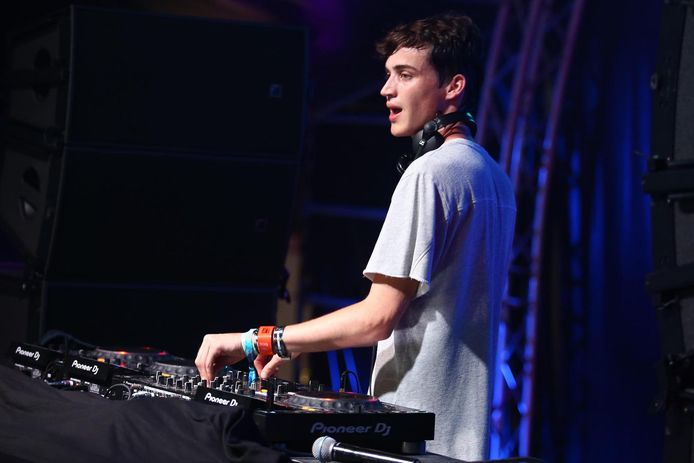

HENRI PFR
16h - 17h
Plongez dans l'euphorie de la musique techno d'Henri PFR, l'artiste électro belge acclamé. Réputé pour ses sets énergiques et ses beats entraînants, Henri PFR crée une atmosphère envoûtante qui fait vibrer les foules. Laissez-vous transporter par ses mélodies hypnotiques et ses rythmes entraînants alors qu'il vous guide à travers un voyage sonore captivant. Préparez-vous à une expérience inoubliable au cœur du festival techno avec Henri PFR aux commandes, prêt à vous faire danser jusqu'au bout de la nuit.
DARIA Kolosova
17h - 18h
Explorez l'univers captivant de Daria Kolosova, une DJ et productrice émergente qui fait vibrer les scènes électro du monde entier. Avec son style unique et son énergie électrisante, Daria Kolosova crée des sets inoubliables qui transportent le public dans une ambiance immersive. Sa passion pour la musique et son talent inné transparaissent à travers chaque note, offrant une expérience sonore dynamique et envoûtante. Ne manquez pas l'opportunité de plonger dans son univers musical lors du festival, où Daria Kolosova vous promet une heure de danse et de sensations inoubliables.

ELLEN ALIEN
18h - 19h
Découvrez l'univers électrisant d'Ellen Allien, DJ et productrice emblématique de la scène électronique allemande. Avec son style avant-gardiste et sa passion pour l'innovation, Ellen Allien crée des sets immersifs qui repoussent les frontières de la musique électronique. Son énergie magnétique et ses beats envoûtants vous transportent dans un voyage sonore captivant. Ne manquez pas l'occasion de vous plonger dans l'univers hypnotique d'Ellen Allien lors du festival, où elle vous promet une expérience électro inoubliable, entre sonorités futuristes et vibrations intenses.

CHARLOTTE DE WITTE
19h - 20h
La fête continue avec l'atmosphère envoûtante de Charlotte de Witte, icône montante de la scène techno mondiale. Avec son style hypnotique et sa capacité à créer une ambiance immersive, Charlotte de Witte offre des sets captivants qui transportent les foules dans une expérience musicale inoubliable. Sa passion pour la musique électronique se manifeste à travers chaque battement de son cœur, offrant une nuit de danse et de transcendance au festival. Ne manquez pas l'occasion de vivre l'énergie incandescente de Charlotte de Witte sur scène, prête à vous emmener dans un voyage sonore inédit au cœur de la techno moderne.

CARL COX
20h - 21h
Carl Cox est une légende vivante de la musique électronique. Avec une carrière qui s'étend sur plusieurs décennies, il est reconnu comme l'un des pionniers du mouvement techno et house. Originaire de Grande-Bretagne, Cox a parcouru le monde entier en tant que DJ et producteur, captivant des millions de fans avec ses sets énergiques et son charisme sur scène. Son style unique mêlant des rythmes entraînants, des basses puissantes et des mélodies hypnotiques crée une atmosphère incomparable sur le dancefloor.
JEFF MILLS
21h - 22h
Jeff Mills est une figure emblématique de la musique électronique, reconnu comme l'un des pionniers du mouvement techno. Originaire de Détroit, États-Unis, Mills a contribué de manière significative à l'évolution de la musique électronique depuis les années 1980. En tant que DJ, producteur et compositeur prolifique, il est réputé pour ses sets intenses et futuristes, mêlant des sonorités industrielles, des rythmes hypnotiques et des expérimentations sonores avant-gardistes. Son style unique et son approche innovante ont inspiré des générations d'artistes et ont contribué à façonner le paysage musical de la techno moderne. En plus de sa carrière solo, Mills est également célèbre pour son travail au sein du collectif Underground Resistance, ainsi que pour ses performances remarquables aux quatre coins du globe.
DEADMAU5
22h - 23h
Deadmau5 est une icône de la musique électronique moderne, connu pour son talent exceptionnel en tant que DJ, producteur et compositeur. Avec son emblématique casque de souris et son style musical distinctif, Deadmau5 transporte son public dans un univers sonore unique, mêlant des mélodies entraînantes, des basses puissantes et des textures sonores complexes. Ses sets épiques et ses spectacles visuels époustouflants font de chaque performance une expérience sensorielle inoubliable.

APHEX TWIN
23h - 00h
Pionnier de la musique électronique expérimentale et célèbre pour son approche innovante et son talent exceptionnel en tant que producteur, compositeur et DJ, on ne présente plus Aphex Twin. Avec ses compositions audacieuses, ses textures sonores uniques et ses beats hypnotiques, Aphex Twin a redéfini les frontières de la musique électronique depuis les années 1990. Sa musique, souvent caractérisée par des sons futuristes, des mélodies éthérées et des rythmes complexes, transcende les genres et inspire des générations d'artistes. En plus de son travail en studio, Aphex Twin est également réputé pour ses performances live incroyables, où il crée une atmosphère immersive et enveloppante qui transporte son public dans un voyage sonore inoubliable. Avec une carrière qui s'étend sur plusieurs décennies, Aphex Twin continue d'être une force majeure dans l'industrie de la musique électronique, laissant une empreinte indélébile sur le paysage musical mondial.

THE PRODIGY
00h - 01h
The Prodigy est un pilier de la scène musicale britannique, avec une réputation indéniable pour leur énergie brute, leurs rythmes percutants et leur attitude rebelle. Formé dans les années 1990, le groupe a su conquérir les charts et les scènes du monde entier avec des hits emblématiques tels que "Firestarter" et "Breathe". Leur musique fusionne habilement des éléments de breakbeat, de punk et de musique électronique, créant un son distinctif qui a captivé des millions de fans. En plus de leur succès commercial, The Prodigy est également réputé pour ses performances live incroyablement énergiques et intenses.
DAFT PUNK
01h - 2h
Daft Punk, le duo emblématique de la musique électronique, se présente en tête d'affiche du festival avec leur style unique et leur flair futuriste. Connus pour leurs casques distinctifs et leur musique entraînante, ils ont façonné l'industrie de la musique avec des tubes intemporels tels que "Get Lucky" et "One More Time". Leur fusion de sons électroniques, de funk et de disco crée une atmosphère vibrante et irrésistible, qui promet une expérience de concert inoubliable. En tant que pionniers de la scène électronique, Daft Punk continue d'inspirer et de captiver les foules du monde entier, et leur performance tant attendue au festival promet d'être un moment épique dans l'histoire de la musique live.